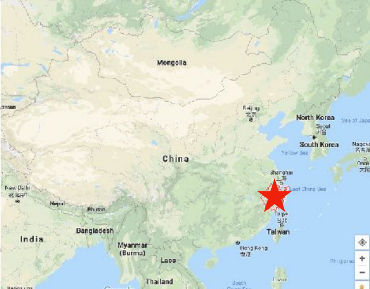

Zhejiang Cuisine 浙菜 Zhècài

Zhejiang Cuisine 浙菜 Zhècài —Mellow, using fresh seafood, freshwater fish, and bamboo shoots, and a wide variety of cooking methods.
Zhejiang Cuisine originates from the populous and rich eastern province of Zhejiang on the Pacific. If you don't like spicy cuisine, but prefer fish and seafood, then this is the food style for you.
Hangzhou, its capital, was the capital of the Southern Song Dynasty, and the city was renowned for their wealth and sophistication. Maybe this is why the food is unusually dainty and refined.